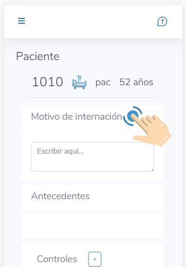
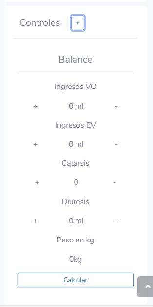

Pasedeguardia
¿Que es?
Es una herramienta gratuita que ayuda a los médicos residentes a realizar sus controles durante la guardia.

Calcula el balance hidrico de manera simple y rápida
Calculá la TAM automáticamente!
Y pronto mucho mas!
¿Cómo funciona?
Cliqueá en el título para poder escribir

Volvé a clickear para guardar lo que escribiste
Balance
Apretando + o - sumas 250ml o 1 vaso o 1 deposición
No te olvides de cargar el peso del paciente al fondo de todo!

Apretando Calcular hacemos la cuenta con agua endógena y perdidas insensibles
Mas controles pronto!
Recien recien relanzamos! Estamos trabajando para agregar muchas mas funciones